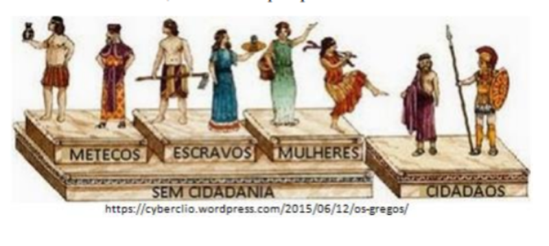

ANTIGUIDADE OCIDENTAL: O MUNDO GRECO-ROMANO, SUA FORMAÇÃO SOCIOPOLÍTICA E LEGADO CULTURAL
Contextualizando
A antiguidade ocidental diz respeito ao período da história marcado pelo desenvolvimento da cultura na região do Mar Egeu, e a posterior formação das cidades estado da Grécia, estendendo-se ainda pela centralização do poder feito pelos macedônicos e finalmente pela formação do Estado romano. Um dos principais elementos que caracterizaram este longo período da história diz respeito aos fatores culturais que aproximaram o mundo grego do mundo romano. Ao longo da nossa leitura é importante que possamos juntar elementos para responder as seguintes questões: Como aconteceu a formação das civilizações egeias? Quais os principais pontos da cultura grega? Como se deu a expansão dos macedônicos? Quais as principais características do mundo romano?
Ao iniciarmos o estudo da antiguidade clássica devemos destacar duas civilizações que exerceram um papel fundamental na construção da sociedade e da cultura grega, trata-se da civilização cretense, também chamada de civilização minoica (3.000 a.C. e 1.400 a.C. na ilha de Creta), e da civilização micênica (região do Peloponeso, continente grego entre 1600-1 050 a.C.).
A civilização cretense desenvolveu dois importantes processos na região que a levaram a assumir um papel de destaque entre os demais povos, tratam-se das atividades comerciais e a criação de uma unidade política. O grande desenvolvimento econômico, foi fundamental para que se consolidasse uma monarquia onde o rei (chamado de Mino), tinha a função de chefe político e religioso, onde a principal divindade era a deusa mãe, símbolo da fertilidade.
A mitologia cretense também fez parte do imaginário das civilizações tanto na antiguidade como nos tempos atuais. A mais conhecida imagem mitológica que este povo nos legou está relacionada a um ser antropomorfo que mistura ao corpo humano a cabeção de um touro. Trata-se do Minotauro que habitava o labirinto no subsolo do palácio de real, na cidade de Cnossos.
Em Micenas o rei centralizava o cenário político e econômico tendo como suporte do seu poder uma forte organização militar, uma aristocracia de guerreiros legitimada pela posse da terra. Além destes, a sociedade micênica era composta por escravos, trabalhadores livres e comerciantes.
Os micênicos tornaram-se reconhecidos por serem exímios navegadores e guerreiros.
CONSTRUINDO CONHECIMENTOS
A Grécia antiga estendeu seu território do sul da Península Balcânica até as regiões da Península Itálica, Ásia Menor e as ilhas do Mar Egeu. Dentre as cidades-estado que melhor expressam a genialidade do povo grego estão Atenas e Esparta, exemplos do desenvolvimento cultural e político da região. Em Atenas, pela primeira vez tem início o que viria a se tornar o regime democrático reconhecido em diferentes países da atualidade. Em Esparta teve curso um modelo de centralização política que manteve os membros da elite citadina no poder, tendo por base um forte processo de militarização da sociedade.
As divergências políticas entre estas duas cidades-estado deu origem a dois blocos de cidade aliadas, chamadas de Liga de Delos que tinha Atenas como líder, e a Liga do Peloponeso onde Esparta detinha a supremacia. Inicialmente a Liga de Delos teve como principal objetivo a defesa das cidades gregas de um ataque persa, e a cidade-estado de Esparta também fez parte dela. Com o passar do tempo a região do Peloponeso, sob a liderança de Esparta, a mais rica e importante das cidades daquele local, criou sua própria Liga, a fim de promover a proteção dos seus membros.
Em Atenas a sociedade dividia-se em três classes. A primeira delas é a dos cidadãos, chamados de eupátridas. Apenas estes possuíam direitos políticos. Ao contrário de como a cidadania é pensada nos dias de hoje, em Atenas as mulheres e as crianças não eram consideradas como fazendo parta do grupo de cidadãos. O segundo grupo é o dos metecos, ou seja, dos estrangeiros que viviam em Atenas. Eles não tinham direitos políticos e também não tinham a posse da terra. A eles era delegado o desenvolvimento do comércio, atividade considerada de menor dignidade entre os atenienses. Além de pagar impostos, os metecos eram também obrigados à servir ao exército ateniense, mesmo que não fossem considerados cidadãos.
 O terceiro e último grupo era formado pelos escravos. Considerados propriedade do senhor, existiam que lhes garantiam a integridade, livrando-os dos maus tratos. O numero de escravos na sociedade ateniense era elevadíssimo, estima-se que para cada cidadão existia um equivalente a 20 escravos, justamente por serem eles o motor da sociedade, desenvolvendo todos os trabalhos considerados de menor valor naquela sociedade.
O panteão dos deuses gregos eram bastante complexo, sendo eles representados sob a forma humana. Trata-se, portanto, de uma religião politeísta e antropomórfica sendo que os deuses tinham as mesmas características e necessidades dos humanos, podendo envolver-se em disputas e estes deuses viviam em um local chamado Olimpo, localizado no alto de um monte do mesmo nome. Posteriormente atribui-se a localização desta morada as nuvens ou ao céu, local onde se imaginava existirem palácios esplendorosos, onde eram feitas festas animadas pela dança, a música e o canto das musas, com abundancia de bebidas e comidas que saciavam e divertiam os deuses. Em honra aos deuses foram erguidos templos onde eram feitas orações e consulta aos oráculos a fim de obterem respostas divinas as dúvidas diversas.
As cidades-estado da Grécia antiga foram alvo da conquista dos macedônicos, povo localizado ao norte da Grécia e que através da centralização do poder político, conseguiram fortalecer-se ao ponto de conquistar as cidades vizinhas. O rei Felipe II impôs o seu domínio sobre as cidades gregas que reagiram de forma diversa. Apesar das guerras, Felipe II conseguiu promover a unificação da Grécia, fazendo frente a um império de grande destaque naquele momento, o império Persa. Com o seu assassinato no ano de 336 a.C., seu filho Alexandre tornou-se o seu sucessor.
Foi sob o comando de Alexandre que os persas passaram a sofrer as suas piores derrotas. Após dez anos de batalhas, os seus exércitos conquistaram territórios no Oriente Médio, Egito e Índia. Alexandre foi o responsável pela criação do maior Império de sua época, suas fronteiras estendiam-se da Macedônia até à Índia e o Egito, local da famosa Alexandrinas regiões conquistadas.
Alexandre foi educado pelo filósofo grego Aristóteles, o que lhe garantiu ricos conhecimentos de história, filosofia, matemática e ciências. Ele foi também o responsável pela expansão da cultura grega pelo Oriente, trata-se do helenismo, reconhecido pela fusão cultural entre a cultura oriental e a cultura grega.
Após a sua morte no ano de 323 a.C., os territórios que haviam sido conquistados acabaram por ser divididos entre seus principais generais. Depois disto, outro povo passa a ter destaque naquele período e região, trata-se dos romanos que tornaram-se o mais importante povo em termos de conquistas e legado a cultura ocidental. Os romanos foram altamente influenciados pela riqueza da cultura grega nos seus mais variados aspectos.
ROMA
Os romanos falavam o latim, língua esta que no futuro iria dar início a outras línguas como é o caso do português, do francês, do italiano e do espanhol. Assim como os gregos, eles desenvolveram uma religião politeísta, sendo que muitos dos deuses romanos foram na realidade uma versão dos deuses gregos, apenas com os nomes alterados.
Quando damos início ao estudo da civilização romana, é comum que a dividamos em três momentos muito peculiares. Trata-se de uma divisão segundo a forma de governo de cada período, mas que também tem muito a nos dizer a respeito dos mais variados aspectos da sociedade romana em períodos distintos. Portanto, iremos falar de Roma no período da monarquia, da república e do império.
No início, Roma era apenas um aglomerado de aldeias de origens Latinas e Sabinas. Contudo, a partir da chegada do povo etrusco em 625 a.C., é criada a cidade e o governo monárquico. Esta monarquia governava de forma absoluta, tendo apoio de um senado e um conselho de anciões.
As grandes famílias chamadas de patrícios formavam a aristocracia. Eles eram os proprietários das terras e dos cargos políticos e religiosos. Os populares, chamados de plebe, não tinham direitos políticos.
Tarquínio é considerado o último monarca etrusco, depois dele foi instaurada a República entre os romanos, no ano de 509 a.C.. Neste período o poder passa do rei para os magistrados, os pretores e depois aos cônsules. A sociedade na República Romana dividia-se entre Patrícios, Clientes, Plebeus e Escravos.
Após a conquista da Península Itálica os romanos partiram para a expansão sobre os demais povos mediterrânicos.
Isto se deu a partir do século III a.C., momento em que passaram a ser impostas as suas maiores conquistas militares. Eles derrotaram os cartagineses nas Guerras Púnicas e assim detiveram o controle do Mar Mediterrâneo. Uma das mais célebres conquista efetuadas pelos romanos se deu no ano de 59 a.C. sobre a região da Gália, tendo como comandante das tropas o famoso líder militar Júlio César. No ano de 27 a.C. tem início o Império Romano, momento em que o senado e povo de Roma atribuem a Otaviano os títulos de Príncipe (que significa primeiro cidadão) e Augusto (que significa venerado, normalmente atribuído aos deuses). Durante o período que esteve no poder (27 a.C. a 14 d.C.), Roma atingiu o seu apogeu.
As conquistas continuaram ao longo do Império, os povos conquistados passaram a ser escravizados ou, noutros casos, tiveram que passar a pagar impostos aos romanos. As regiões sob o domínio do império eram chamadas de províncias, e delas vinham os recursos necessários para fazer de Roma a grande capital do Império. Os romanos foram também grandes construtores de estradas, fortificações, aquedutos e demais obras públicas.
Por outro lado, a utilização dos prisioneiros de guerra como escravos provocou desemprego e também a concentração de terras nas mãos da aristocracia que adquiria as terras dos pequenos proprietários endividados. Estas, por sua vez, passaram a habitar nas cidades, disputando o mercado de trabalho com outros trabalhadores. Com as conquistas, aumentam o número de comerciantes e militares que enriquecem com a cobrança de impostos e outras atividades relacionadas a guerra.
Entre os principais fatores responsáveis pela crise do Império Romano podemos destacar o colapso do sistema escravista, por consequência disto a diminuição da produção e do fluxo comercial e, aquele que foi um dos mais significativos fluxos populacionais da história europeia, a expansão dos povos que habitavam as fronteiras do Império e que eram chamados pelos romanos de bárbaros.
Alguns dos marcos mais significativos do período imperial foram a sua divisão feita pelo Imperador Diocleciano no ano de 284 em Império Romano do Oriente com a capital na cidade de Bizâncio, e Império Romano do Ocidente, com capital na cidade de Roma.
O fim do Império Romano do Ocidente no ano de 476, após longo período de invasões dos povos “bárbaros” (Vândalos, Ostrogodos, Visigodos, Anglo-Saxões e Francos, et.) restando ainda o Império Romano do Oriente, que se manteve até o ano de 1453 quando a sua capital a então chamada cidade de Constantinopla foi invadida pelos turcos.
O QUE APRENDI
Ao termino do nosso estudo aprendemos sobre a formação do mundo clássico, as primeiras civilizações egeias e como elas construíram importantes núcleos urbanos onde a cultura se expressou de forma magnífica pela beleza e riqueza de elementos simbólicos.
Vimos ainda os principais aspectos da cultura grega, como as cidades estado de Atenas e Esparta foram importantes para a vida pública especialmente nas regiões onde desenvolveram a sua influência. Os deuses gregos, o legado cultural ateniense e o desenvolvimento da democracia são legados importantes do mundo grego.
A expansão do império macedônico e a formação do mundo romano, especialmente a forma como foi construído este vasto império, foram importantes momentos do passado, capazes de contar muito a respeito de como foi a vida naqueles locais. Também podes, a partir do estudo realizado, compreender melhor alguns dos principais elementos da riquíssima herança cultura da antiguidade clássica nos dias atuais.